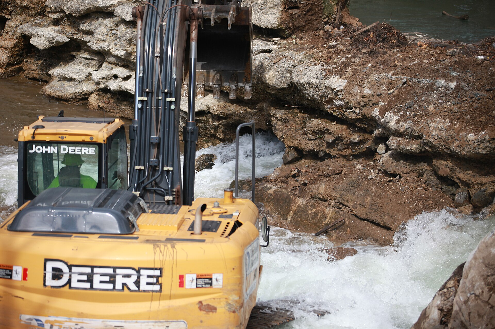

Chapter 17
The Flood Enters the National Memory
The scar in the hillside above the Little Conemaugh remained unmarked. The breach stood open. No fence closed it. No sign explained it. The lakebed was dry earth and low brush. The clubhouse sat empty. The men who had owned the dam lived in Pittsburgh, in New York, in Washington. Their ledgers were closed. The valley below the gap was rebuilding.
In May 1900, eleven years after the water, a crowd gathered at the Stone Bridge in Johnstown. The debris pile that had burned against its piers in June 1889 had been cleared. The crowd came for an anniversary observance. Some had walked from Woodvale. Some had come from the upper streets of the city. They stood where the flood debris had caught fire. A survivor read an account. The names of the dead were spoken. The observance was local. The newspapers in Johnstown printed the proceedings. The newspapers in Pittsburgh noted the date. No newspaper in New York sent a reporter.
That same spring, an engineer named William Worthen published a paper in a professional journal. Worthen was a consulting engineer in New York. His subject was the safety of reservoir dams. He cited the South Fork Dam. He described the lowered crest, the blocked spillway, the failure. He used the failure as an example for other engineers. The audience was narrow. The lesson was precise.
The two events sat side by side. In Johnstown, the flood was memory. In the journal, it was data. The survivors gathered at the bridge. The engineers cited the dam. Neither gathering produced a legal consequence. No court held anyone liable. No legislature passed a law. The flood was becoming a story and a technical precedent at the same time, and nothing else.
The previous decade had killed the legal record. The last suits naming individual members of the South Fork Fishing and Hunting Club had failed. The courts held that the members could not be held personally liable for the acts of the corporation. The corporation itself had no assets worth pursuing. The club’s lawyers argued the storm was an act of God. The judges agreed that proximate cause could not be traced from the club’s modifications to the dam’s collapse with the specificity the law required. The club dissolved. The deeds transferred. The members continued. Andrew Carnegie built libraries. Henry Clay Frick collected art. Andrew Mellon pursued banking. The valley rebuilt in silence.
The legal cost was zero. The cultural cost was just beginning.
The survivors had started writing almost immediately. Reverend David Beale published his account, “Through the Johnstown Flood.” Beale had lived through the water. He described the night, the morning, the people he saw, the sound. His book was one of the first. It was not the last. The survivors wrote because the courts had given them nothing. They wrote because the dam’s owners had said nothing. They wrote because the water had taken everything and the law had taken nothing in return.
The writing was a form of accounting. The survivors’ accounts listed the dead. They listed the houses swept away. They listed the streets scoured bare. The cost was specific. A house on Locust Street. A family named on a plaque. A bridge rebuilt with new stone. The writing fixed the flood in the record. The courts had refused to fix responsibility. The survivors fixed the event.
By 1900, the anniversary observances had become regular. The crowd at the Stone Bridge grew each year. The Johnstown newspapers printed longer accounts. The survivors spoke. They named the dead. They described the water. They described the sound. A roar. A wall. A darkness. The descriptions hardened into a set form. The form was the authorized version. The survivors were the authorized storytellers.
The city rebuilt. The Cambria Iron Works reopened. The streets were graded. The houses rose again. The Pennsylvania Railroad repaired its line. The stone arch bridge stood where it had stood. The new city was built on the knowledge of what the old city had not known. The new city knew the dam was above it. The new city knew the water could come. The knowledge was in the brick. The knowledge was in the grade. The knowledge was in the anniversary speeches.
The tourists came. The guidebooks directed them. A visitor to Johnstown in 1900 could walk the flood path. The guidebook pointed to the Stone Bridge, to the high-water mark on the walls, to the empty lots where houses had stood, up the valley toward South Fork. The path was a circuit. The visitor could see where the water entered, where it stopped, where it burned. The flood had become a destination.
The destination was not the dam. The dam was fourteen miles upstream. The road to South Fork was rough. The breach was hard to reach. The guidebooks did not direct visitors there. The dam was not yet part of the tour. The dam was the scar that no one came to read. The tour was of the city. The tour was of the valley’s wound. The scar in the hillside was separate. The separation held.

The national magazines discovered the flood in the early 1900s. The features described the catastrophe, the dam, the club. They named the members. The features were not legal briefs. They were stories. The stories reached readers who had not been in Johnstown. The readers learned the names. Carnegie. Frick. Mellon. The names were famous by then. The flood attached to them. The attachment was cultural, not legal. The courts had severed the legal connection. The magazines rebuilt the connection in narrative.
The motion picture reached the flood. A film company produced a reenactment. The film showed the dam breaking, the water rushing down the valley, the city destroyed. The film was not documentary. It was drama. The drama reached audiences who could not read the magazines. The image of the wall of water entered the national imagination. The image was fixed. The image was simple. The dam broke. The water came. The city died. The simplicity was the image’s power. The simplicity was also its cost. The simplicity erased the decisions. The lowered crest. The blocked spillway. The patched embankment. The ignored warnings. The simplicity made the flood look like fate.
The professionals resisted the simplicity. The engineers had their own version. Worthen’s paper was one of several. Engineers cited South Fork when they argued about reservoir safety. They cited the lowered crest, the inadequate spillway, the lack of inspection, the failure. The failure was their founding example. The American Society of Civil Engineers had published its investigation in 1891. The report described the dam’s defects, the club’s modifications, the failure’s mechanism. The report was technical. It was precise. It was the document the engineers used.
The engineers’ version and the survivors’ version were not the same. The survivors’ version was a story of loss. The engineers’ version was a story of error. The survivors named the dead. The engineers named the defects. The survivors gathered at the bridge. The engineers gathered in journals and at conferences. Both versions were true. Neither version had produced a law. Neither version had produced an inspection regime. Neither version had held anyone accountable.
The two versions shared a gap. The gap was the gap in the dam. The legal record had closed. The cultural record had opened. Between the two sat the breach. The breach was the physical fact. The breach was the evidence. The breach was the thing itself.
The deferred-maintenance debt was becoming public memory. The cost of the neglected repairs, the lowered crest, the blocked spillway — that cost had been passed from the club to the valley. The valley had paid in lives. The valley had paid in destroyed houses. The valley had paid in years of rebuilding. The club had paid nothing. The debt was now being remembered. The remembering was not payment. The remembering was the record of an unpaid debt. The debt entered memory because it had not entered the courts.
The absentee ledger was becoming public. The private record of dues and leisure kept by men far from the Little Conemaugh was now open. The magazines printed the members’ names. The survivors spoke the members’ names. The ledger was not a financial document. It was a cultural document. The names were attached to the dam. The names were attached to the flood. The attachment was not legal. The attachment was narrative. The narrative was the penalty the courts had refused to impose.
The first legislative moves toward dam inspection were halting. A state committee in Pennsylvania considered the question. The committee heard testimony. Engineers testified about South Fork. The testimony was specific. The dam had been lowered. The spillway had been blocked. The embankment had been patched. No engineer had inspected it. No public authority had jurisdiction. The committee considered a bill. The bill proposed inspection. The bill proposed standards. The bill did not pass immediately. The bill was the first of its kind. The South Fork failure was the bill’s foundation. The failure was the cautionary example. The example was cited. The example was not yet a law.
The legal system had said the flood was an act of God. The storm was unprecedented. The rain was extraordinary. No owner could have foreseen the failure. That was the club’s defense. The courts accepted it. The defense was that the dam had stood for decades. The defense was that the modifications were minor. The defense was that the rain was beyond any probable maximum. The defense was that the failure was not the result of human decisions.
The engineers’ record contradicted the defense. The American Society of Civil Engineers report described the modifications. The crest had been lowered. The spillway had been blocked with screens. The embankment had been patched with straw and manure. The spillway capacity was inadequate. The freeboard was insufficient. The dam had not been tested by a storm of the magnitude of May 1889. The dam had not been tested by any storm approaching that magnitude. The modifications reduced the dam’s capacity. The modifications reduced the margin. The margin was the difference between the dam holding and the dam failing. The modifications narrowed the margin. The storm eliminated it.
The storm was extraordinary. The modifications were not. The modifications were decisions. The decisions were made by the club. The decisions were made over years. The decisions were documented. The club’s minutes recorded the work. The club’s correspondence recorded the concerns. The engineers who inspected the dam recorded the defects. The record was clear. The record was the evidence the courts could not use. The record was the evidence the engineers cited. The record was the evidence the survivors remembered.
The contradiction between the legal record and the technical record was the chapter’s center. The legal record said no one was responsible. The technical record said the dam was defective. The cultural record said the members’ names were attached. The contradiction was not resolved. The contradiction was the flood’s legacy. The flood entered national memory as a contradiction. The contradiction was the gap. The gap was the breach. The breach was the scar.
The survivors’ generation aged. The survivors who spoke at the Stone Bridge in 1900 were middle-aged. The survivors who spoke in 1905 were older. The survivors who spoke in 1910 were old. Their accounts were consistent. The accounts were also changing. The details softened. The names blurred. The exact sequence of events shifted. The authorized version was stable. The details were not. The stability was the story’s frame. The frame was the wall of water. The frame was the fire at the bridge. The frame was the city destroyed. The details inside the frame moved.
The city’s physical memory was fixed in the high-water mark. The mark was painted on walls. The mark showed where the water had reached. The mark was a line. The line was visible. The visitor could see it. The visitor could stand below it. The visitor could look up. The line was above the visitor’s head. The line was the height of the water. The height was the measure of the catastrophe. The height was also the measure of the dam’s failure. The water had reached that height because the dam had failed. The dam had failed because the crest was low. The dam had failed because the spillway was blocked. The dam had failed because the embankment was patched. The line on the wall was the connection between the dam and the city. The line was the evidence. The line was the scar in the city.
The dam’s scar was invisible to most. The dam was fourteen miles upstream. The road was rough. The woods grew over the embankment. The breach was still open. The lakebed was still dry. No one maintained the site. No one marked it. No one visited it. The dam was the absent center of the flood’s memory. The city remembered the water. The city did not remember the dam. The dam was above. The city was below. The separation held.
The professionals tried to close the separation. The engineers cited the dam. The legislators heard testimony about the dam. The dam was the cause. The water was the effect. The separation between cause and effect was the distance between the dam and the city. The distance was fourteen miles. The distance was fifty-seven minutes. The distance was the time the water took to travel from the breach to the Stone Bridge. The distance was the gap.
The gap was physical. The gap was also conceptual. The legal system could not bridge the gap. The legal system required proximate cause. The legal system required a direct connection between the defendant’s act and the plaintiff’s injury. The connection was there. The connection was the water. The water traveled from the dam to the city. The water was the connection. The legal system said the connection was not enough. The legal system said the storm intervened. The legal system said the act of God broke the chain.
The cultural system did not require proximate cause. The cultural system required a story. The story had a dam. The story had a club. The story had members. The story had a storm. The story had a flood. The story had a city. The story had the dead. The story connected the dam to the city. The story connected the club to the dead. The story connected the members to the dam. The connection was narrative. The connection was not legal. The connection was the memory.
The memory was becoming institutional. The American Red Cross, led by Clara Barton and with fifty volunteers, had undertaken a major disaster relief effort. Support for victims came from all over the United States and eighteen foreign countries. The relief effort was the first large-scale Red Cross operation in a domestic disaster. The effort established the Red Cross as the national instrument of disaster response. The Johnstown Flood was the organization’s founding case. The case was remembered. The case was cited. The Red Cross remembered the flood as the moment it became necessary. The necessity was institutional. The flood created the Red Cross’s role. The role outlasted the flood. The role outlasted the survivors. The role outlasted the legal record.
The institutional memory was different from the survivors’ memory. The institutional memory was functional. The Red Cross remembered the flood as a logistics problem. The problem was supplies. The problem was shelter. The problem was medicine. The problem was coordination. The Red Cross learned from the flood. The learning was practical. The learning was also a form of forgetting. The Red Cross forgot the dam. The Red Cross forgot the club. The Red Cross forgot the decisions. The Red Cross remembered the response. The response was the Red Cross’s story. The response was not the flood’s story.
The engineers’ memory was also functional. The engineers remembered the dam, the defects, the failure. The engineers’ memory was technical. The memory was a set of specifications. The crest height. The spillway width. The embankment composition. The freeboard. The memory was a checklist. The checklist was for other dams. The engineers’ memory was preventive. The memory was meant to prevent the next South Fork. The memory was not about Johnstown. The memory was about the next dam.
The survivors’ memory was about Johnstown. The memory was about the people, the place, the dead, the loss. The memory was not preventive. The memory was not technical. The memory was not institutional. The memory was personal. The personal memory was fading. The survivors were aging. The survivors were dying. The memory was passing with them.
The three memories — the survivors’, the engineers’, the Red Cross’s — were the flood’s national presence. The three memories did not agree. The three memories did not combine. The three memories existed side by side. The side-by-side existence was the flood’s cultural form. The form was not unified. The form was fragmented. The fragmentation was the flood’s legacy. The legacy was not a single story. The legacy was three stories. The three stories were the national memory.
The national memory was rich. The national regulation was weak. The two facts sat side by side. The magazines printed the stories. The engineers cited the failure. The legislatures considered bills. The bills did not pass. The inspection regime did not arrive. The dams in the United States were unregulated. The dams were built by private owners. The dams were built by companies. The dams were built by cities. The dams were not inspected. The dams were not required to meet standards. The South Fork failure was the example. The example was cited. The example was not yet a law.
The irony was sharp. The flood was the most remembered disaster in American life. The flood was the least regulated disaster in American law. The courts had said no one was responsible. The legislatures had said no inspection was needed. The engineers had said the dam was defective. The survivors had said the club was guilty. The magazines had said the members were connected. The Red Cross had said the response was necessary. None of these statements had produced a statute. None had produced a regulation. None had produced an inspection requirement.
The city stood below the dam. The city was rebuilt. The city remembered the old city. The remembering was annual. The remembering was institutional. The remembering was personal. The remembering was also a form of forgetting. The city remembered the water. The city forgot the dam. The city remembered the dead. The city forgot the decisions. The city remembered the fire. The city forgot the spillway. The city remembered the bridge. The city forgot the crest.
The forgetting was not complete. The engineers remembered. The engineers cited the dam. The engineers used the dam as an example. The example was technical. The example was precise. The example was not public. The example was in the journals. The example was in the testimony. The example was in the committee rooms. The example was not in the law.
The survivors remembered. The survivors spoke. The survivors gathered. The survivors aged. The survivors died. The memory was passing to the next generation. The next generation had not seen the water. The next generation had not smelled the fire. The next generation had not heard the roar. The next generation had the story. The story was the survivors’ gift. The story was also the survivors’ burden. The burden was the truth. The truth was the gap.
The gap was the breach in the dam. The gap was the distance between the dam and the city. The gap was the distance between the legal record and the technical record. The gap was the distance between the memory and the law. The gap was the distance between the story and the statute. The gap was the flood’s center. The gap was the scar.
The survivors’ generation was the bridge between the event and the memory. The bridge was made of testimony. The testimony was oral. The testimony was written. The testimony was consistent in its frame. The testimony was variable in its detail. The bridge was strong. The bridge was also temporary. The bridge was made of people. The people were aging. The people were dying. The bridge would not last.
The engineers’ record was permanent. The record was in print. The record was in journals. The record was in the American Society of Civil Engineers report. The report was filed. The report was cited. The report was the technical memory. The technical memory was durable. The technical memory was also narrow. The technical memory reached engineers. The technical memory did not reach the public. The public read the magazines. The public saw the films. The public did not read the journals.
The Red Cross’s record was institutional. The record was in the files. The record was in the reports. The record was in the ledgers. The relief commission had kept ledgers. The ledgers recorded the disbursements. The ledgers recorded the supplies. The ledgers recorded the names. The ledgers were the institutional memory. The institutional memory was durable. The institutional memory was also functional. The institutional memory remembered the response. The institutional memory did not remember the cause.
The three records were the flood’s legacy. The three records were the national memory. The national memory was rich. The national memory was fragmented. The national memory was not a single story. The national memory was three stories. The three stories did not agree. The three stories did not combine. The three stories existed side by side.
The flood’s cultural ascent came after its legal death. The legal death was in the courts. The cultural ascent was in the magazines, the journals, the films, the anniversary observances, the guidebooks, the Red Cross files, the engineers’ citations. The ascent was broad. The ascent was also shallow. The ascent did not produce a law. The ascent did not produce a regulation. The ascent did not produce an inspection regime.
The ascent produced memory. The memory was the debt becoming public. The debt was the deferred-maintenance cost. The cost was the lives. The cost was the houses. The cost was the years of rebuilding. The cost was remembered. The cost was not repaid. The cost was not prevented.
The ascent produced names. The names were the absentee ledger made public. The names were Carnegie. The names were Frick. The names were Mellon. The names were attached to the dam. The names were attached to the flood. The attachment was cultural. The attachment was not legal. The cultural attachment was the penalty. The penalty was the memory. The memory was the only court that had convicted them.
The conviction was not enough. The conviction did not inspect the next dam. The conviction did not require the next owner to maintain the next spillway. The conviction did not require the next legislature to pass the next statute. The conviction was a story. The story was the flood’s achievement. The story was also the flood’s limit.
The limit was the gap between memory and law. The gap was the gap in the dam. The gap was the scar. The scar was unmarked. The scar was unrepaired. The scar was above. The city was below. The separation held.
The survivors gathered at the Stone Bridge. The engineers cited the dam in their journals. The legislators heard testimony in their committee rooms. The Red Cross filed its reports. The magazines printed their features. The film companies produced their reenactments. The tourists walked the flood path. The guidebooks pointed to the high-water mark. The city rebuilt. The dam sat in the woods. The breach was open. The gap held.
The question was whether the warning would outlast the witnesses. The warning was the engineers’ record. The warning was the survivors’ accounts. The warning was the scar in the hillside. The warning was the high-water mark on the walls. The warning was the gap. The warning was the breach. The warning was the dam above Johnstown.
The dam sat in the woods. The breach was open. The lakebed was dry. The clubhouse was empty. The members were in their offices, in their mansions, in their clubs. The valley was below. The city was rebuilt. The bridge stood. The high-water mark was painted on the walls. The scar was in the hillside. The scar was unmarked. The scar was above. The city was below. The gap was between them.
The gap held. The scar held. The memory held. The regulation did not come. The witnesses aged. The dam sat in the woods. The breach was open. The city stood below. The separation held. The memory was rich. The law was weak. The witnesses were dying. The warning was in the scar. The warning was in the mark. The warning was in the testimony. The warning was in the journals. The warning was in the gap.
The gap was the only thing left. The gap was the truth. The gap was the scar that no one came to read. The gap was above. The city was below. The witnesses were dying. The warning was in the gap. The gap held.